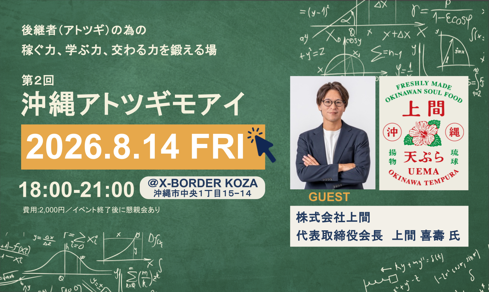
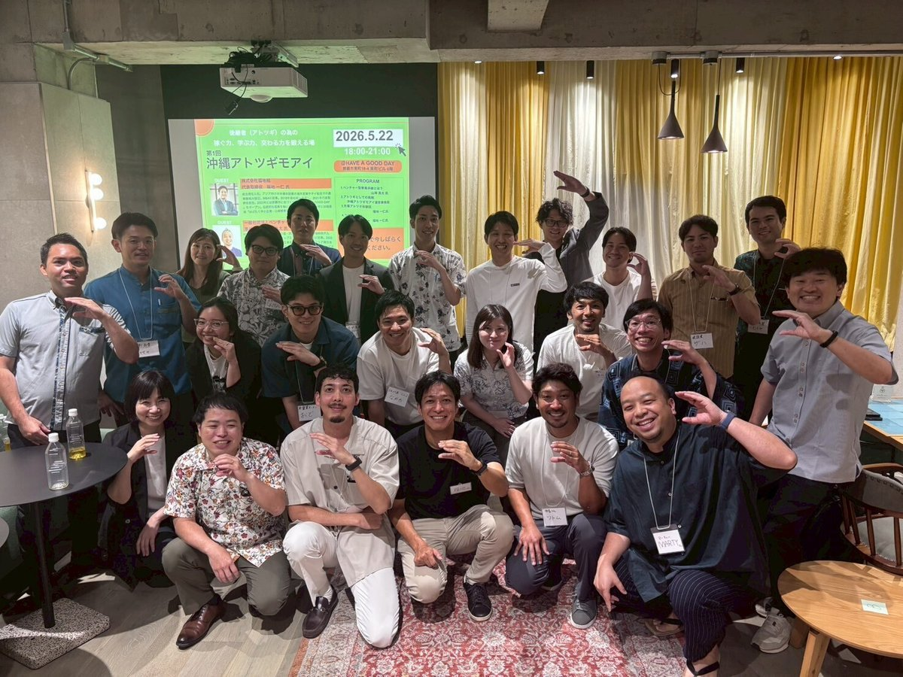
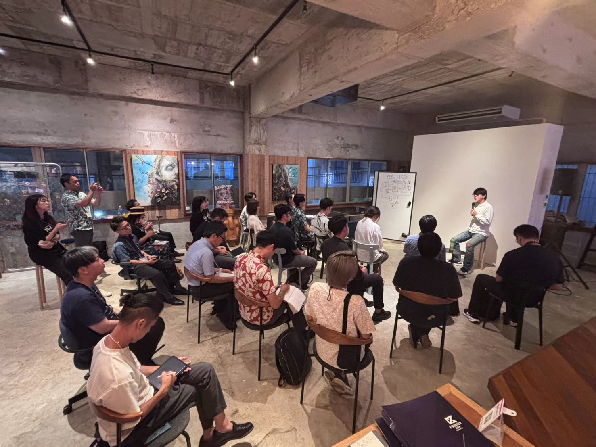
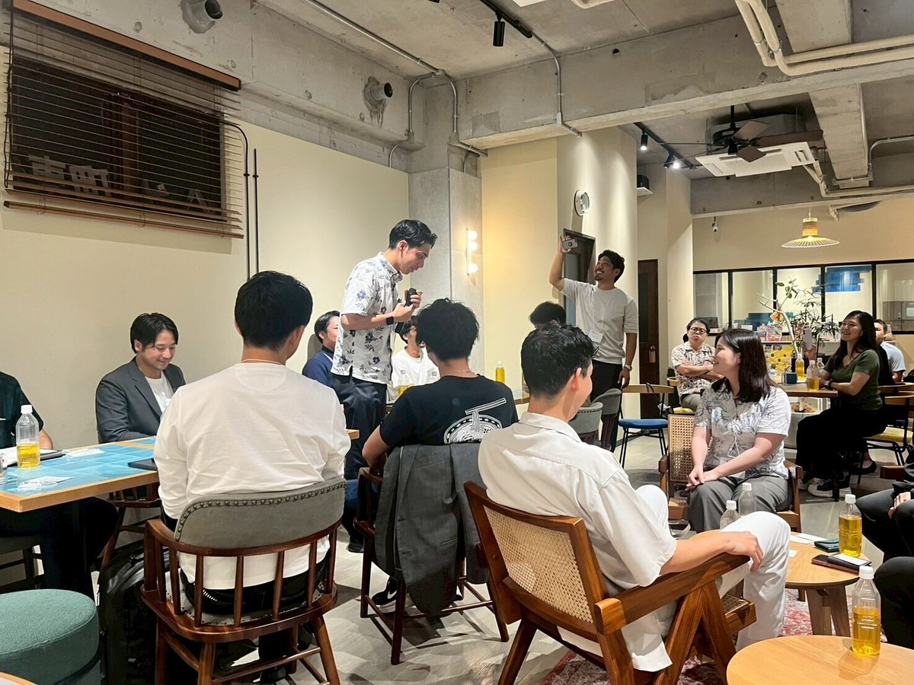
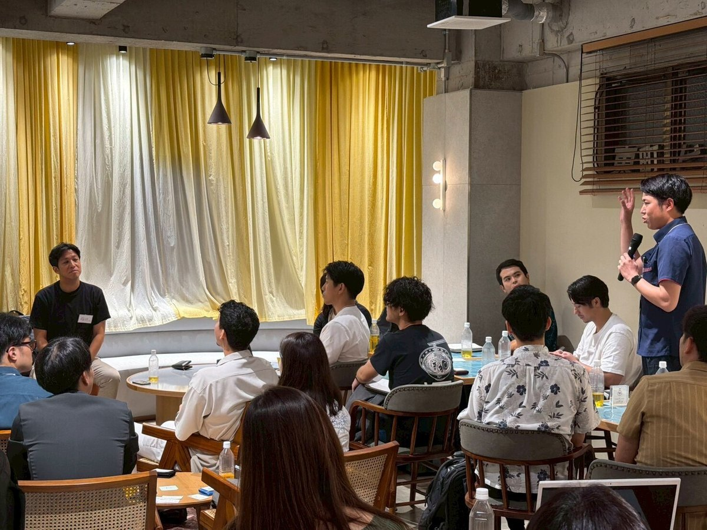
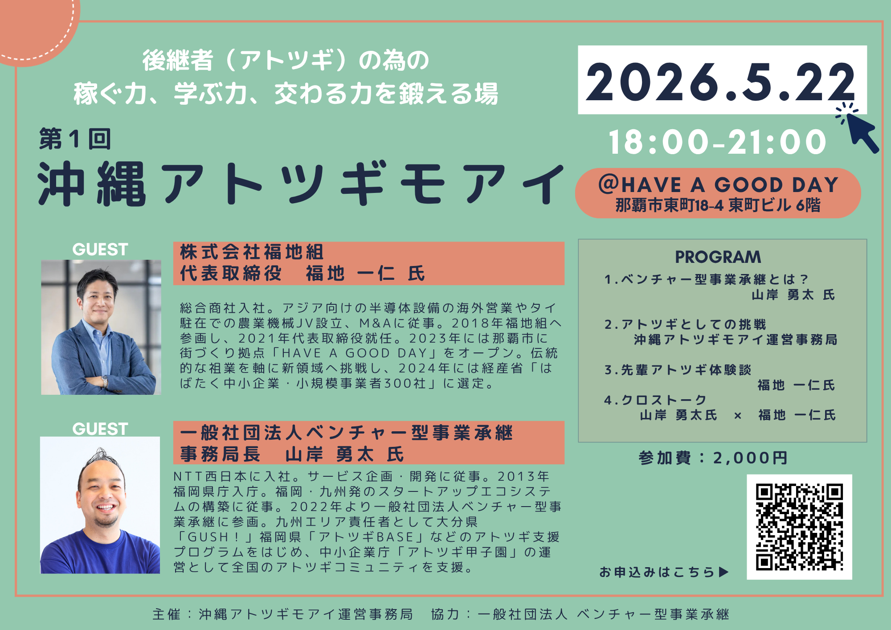
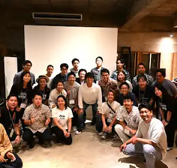
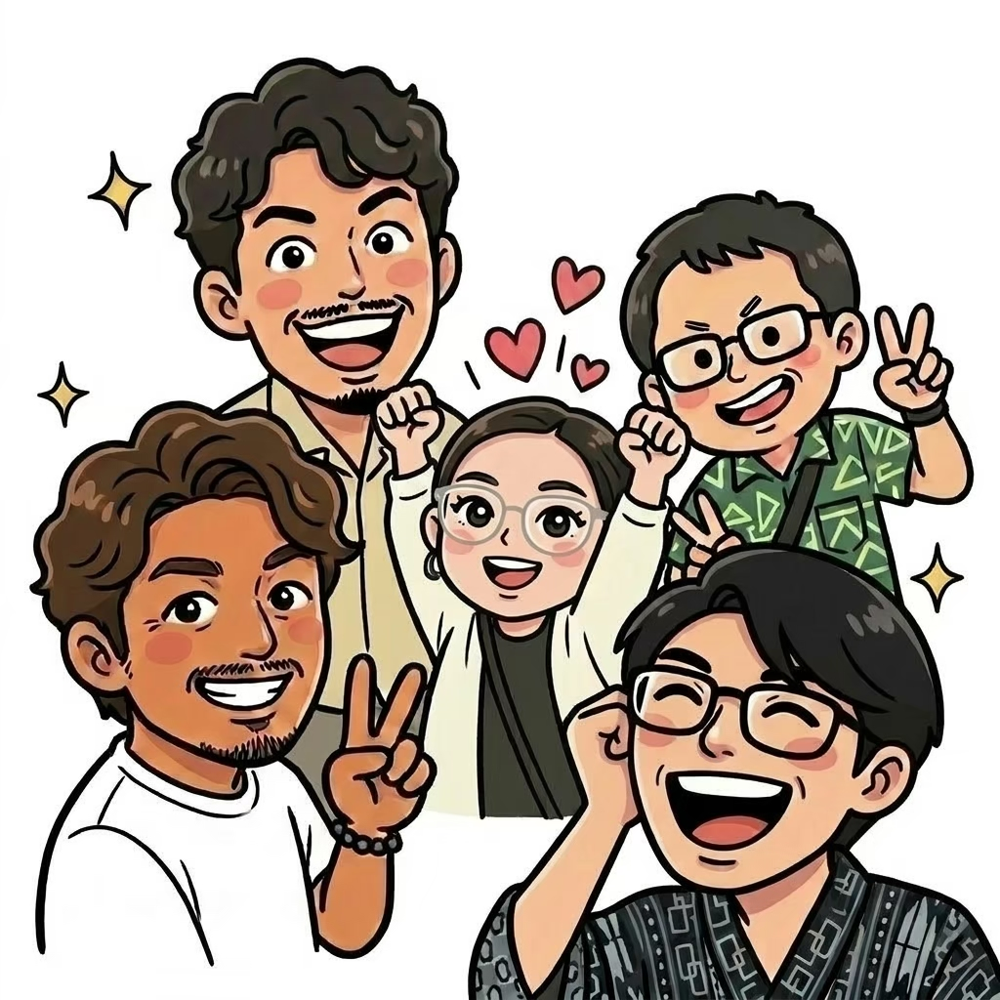

第2回 沖縄アトツギモアイ

ゲスト：上間 喜壽さん
会場：X-BORDER KOZA
受け継ぐ、その先へ。 / OKINAWA
ひとりで抱えていたことが、
誰かと話すと、次の一歩に変わる。
学び、動き、高め合う。アトツギのためのモアイ。




Next Moai
いずれも開催終了しています。チラシ内の申込案内・QRコードは当時のものです。

ゲスト：上間 喜壽さん
会場：X-BORDER KOZA

ゲスト：福地 一仁さん・山岸 勇太さん
会場：HAVE A GOOD DAY
About us

Journal
活動レポートは公式noteからお読みいただけます。
Media
モアイの活動を、紹介いただきました。
第1回沖縄アトツギモアイの開催が、琉球新報で紹介されました。
琉球新報の記事を読む ↗記事全文の閲覧には購読・ログインが必要です。第2回沖縄アトツギモアイの様子を紹介していただきました。
HEROESの記事を読む ↗Support
家業の次の一歩に使える支援を。
詳しい条件・募集状況は各機関の公式案内へ。
Challenge
家業の強みと、自分のアイデアで未来を描く。
アトツギ甲子園に挑む仲間を、沖縄から増やしていきたい。
モアイでの学びを、次のステージへつなげます。
Join us

家業を継ぐ予定の方、承継して3年以内の方へ。
初めての参加も、県外からのお問い合わせも歓迎です。
参加のご相談・お問い合わせは、
こちらのメールアドレスへご連絡ください。
事業承継予定の方も対象です。現在の状況を添えて事務局へご連絡ください。
このサイトと公式noteでお知らせします。LINEグループへの参加は事務局へお問い合わせください。
協賛、登壇、支援情報のご提供などについて、事務局へご相談ください。